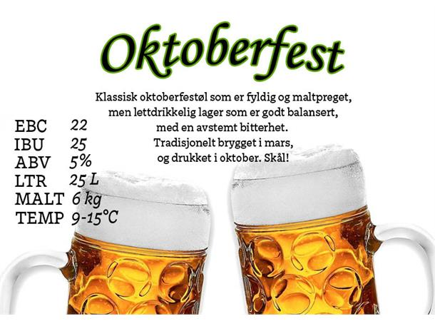

__________ .__ .___ ___.
\______ \__ __| | __| _/______ ____\_ |_________ ___.__. ____ ____
| | _/ | \ | / __ |\_ __ \_/ __ \| __ \_ __ < | |/ ___\ / ___\
| | \ | / |__/ /_/ | | | \/\ ___/| \_\ \ | \/\___ / /_/ > /_/ >
|______ /____/|____/\____ | |__| \___ >___ /__| / ____\___ /\___ /
\/ \/ \/ \/ \/ /_____//_____/
Etablert 2021
_ _ _______ _______ ________ ___ ___ __ .___ .__ __ __ _____ __
__| || |_\ _ \ \ _ \ / _____/ / | \ ___//________/ |_ __| _/______|__| | _| | __ _____/ ____\____ _______/ |_
\ __ / /_\ \/ /_\ \/ __ \ ______ / ~ \/ _ \/ ___/\ __\/ __ |\_ __ \ | |/ / |/ // __ \ __\/ __ \ / ___/\ __\
| || |\ \_/ \ \_/ \ |__\ \ /_____/ \ Y ( <_> )___ \ | | / /_/ | | | \/ | <| <\ ___/| | \ ___/ \___ \ | |
/_ ~~ _\\_____ /\_____ /\_____ / \___|_ / \____/____ > |__| \____ | |__| |__|__|_ \__|_ \\___ >__| \___ >____ > |__|
|_||_| \/ \/ \/ \/ // \/ \/ \/ \/ \/ \/ \/

_
,-' `-._
|=========|
( )
| !! |
| !! |
| |
| |
`======='